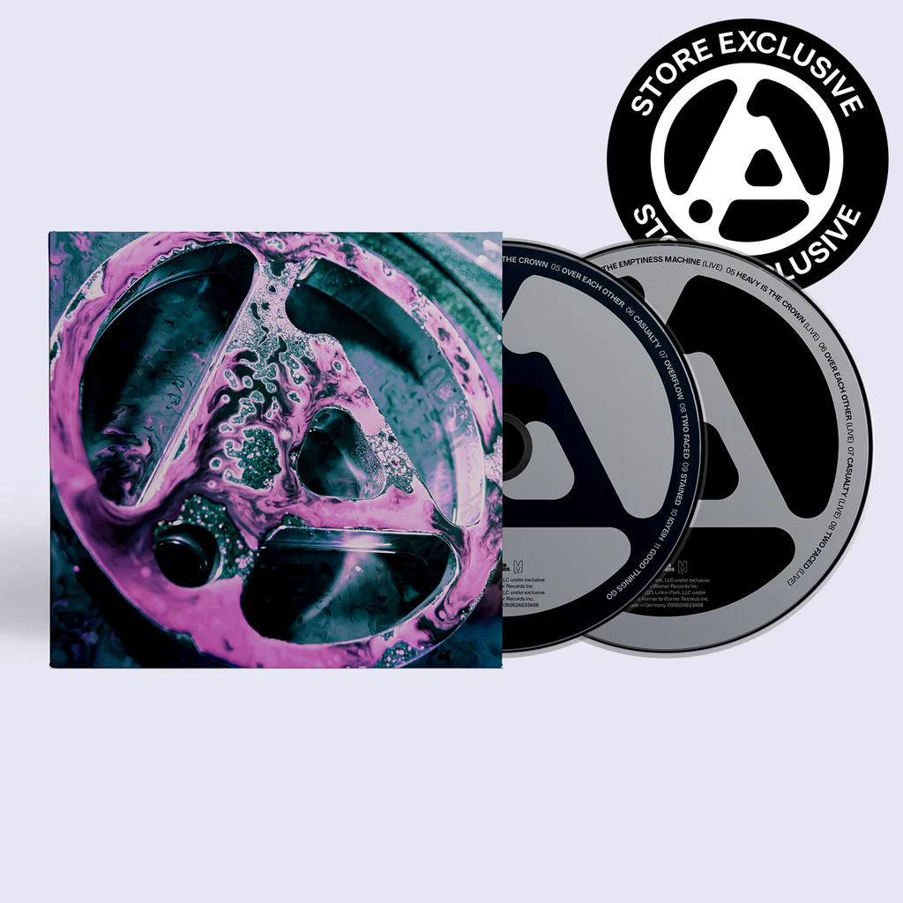
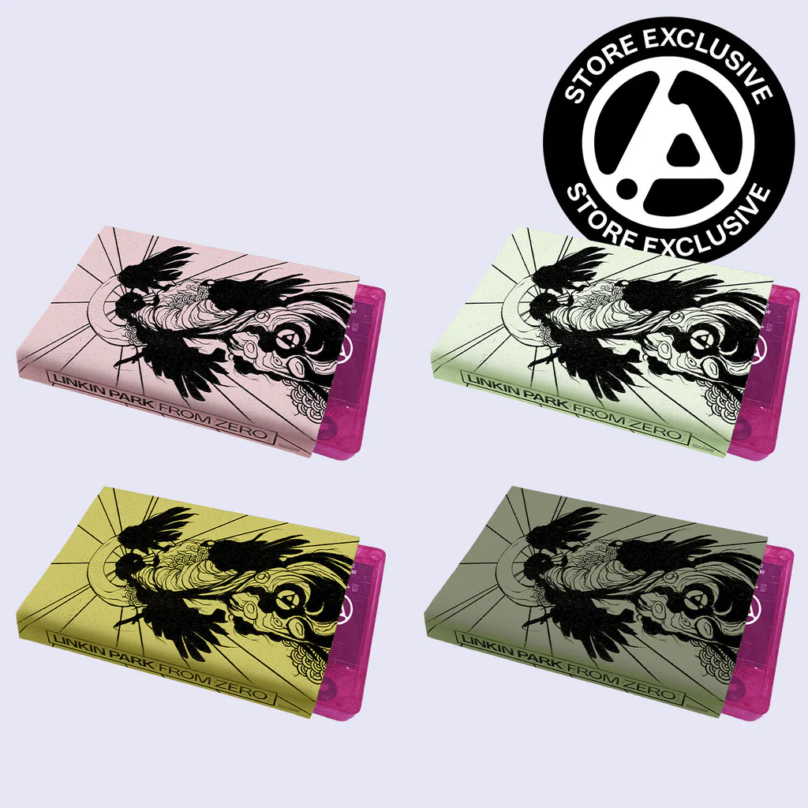
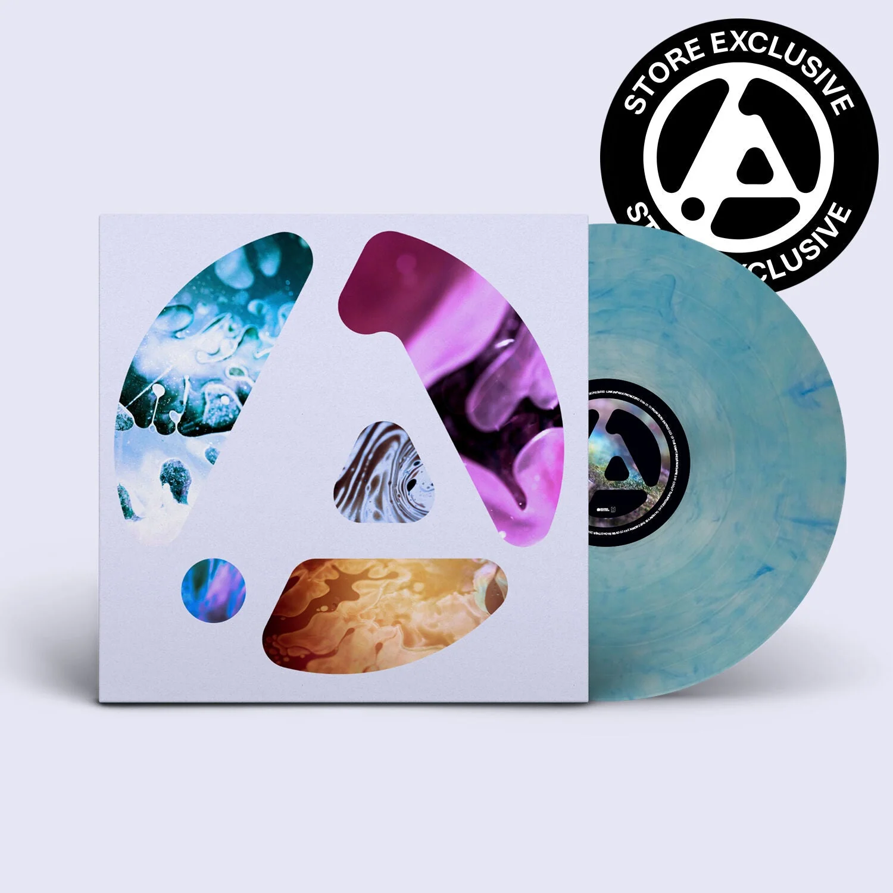
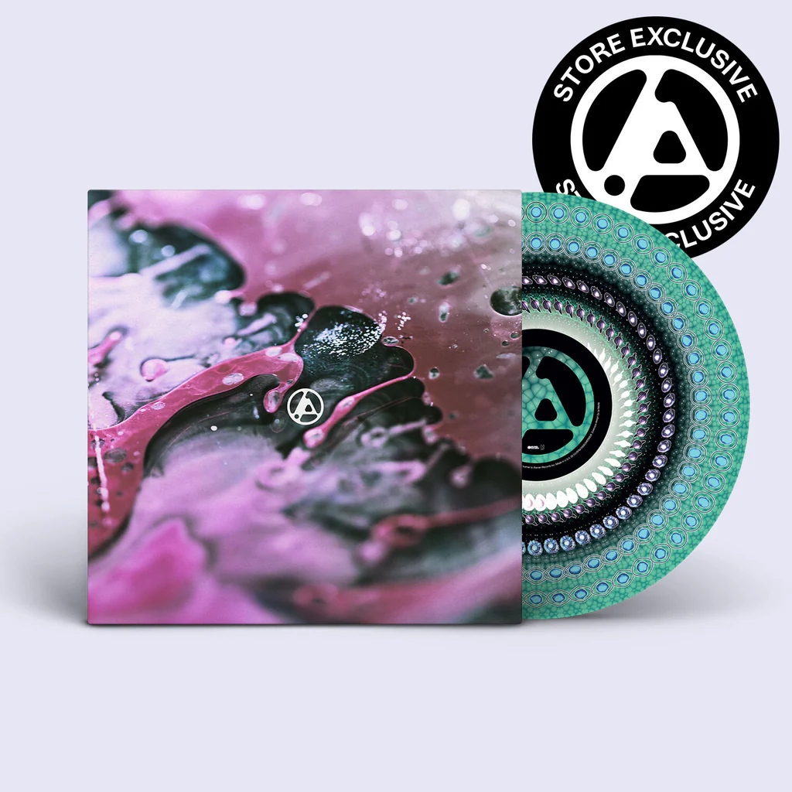
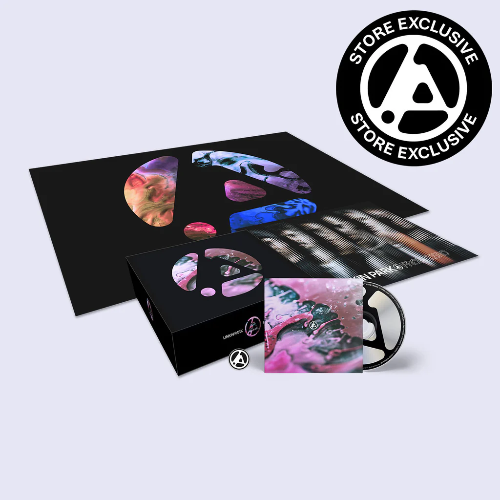
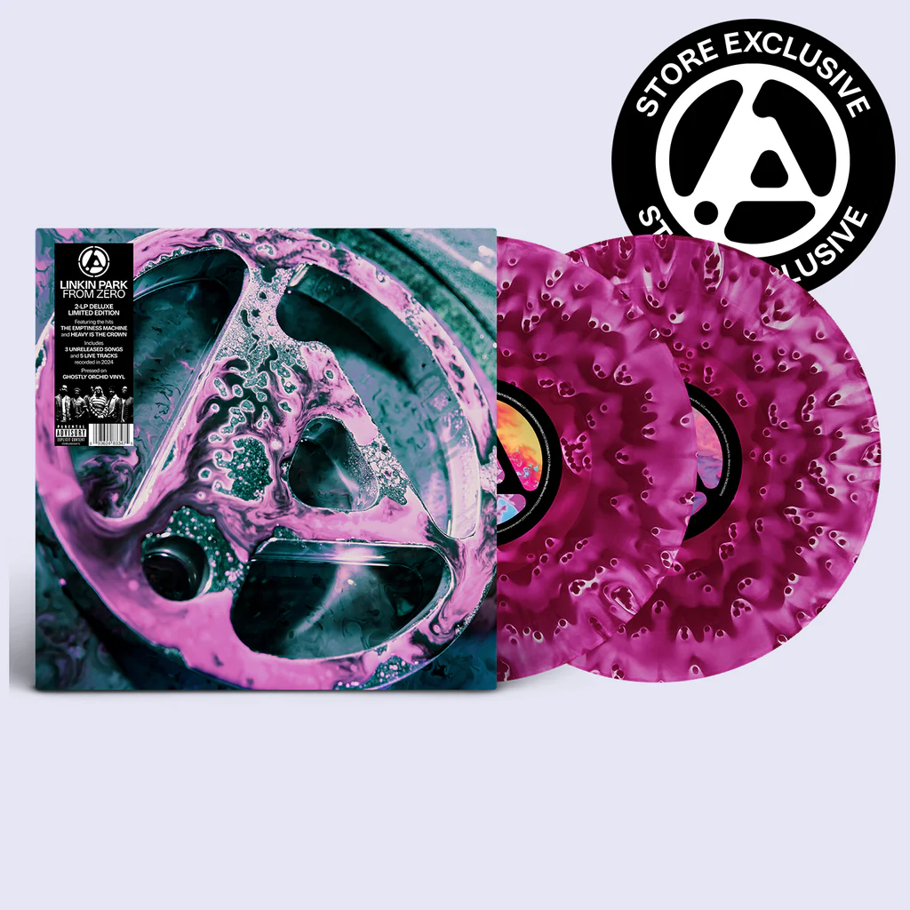
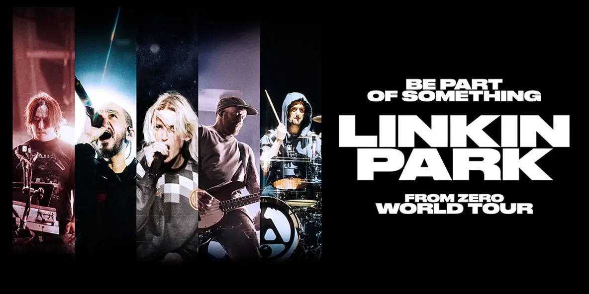

TOUR
| Date | City | Country | Venue | Tickets |
|---|---|---|---|---|
| 29 May 2026 | Stockholm | Sweden | 3Arena | TICKETS |
| 01 Jun 2026 | Hamburg | Germany | Volksparkstadion | TICKETS |
| 03 Jun 2026 | Hamburg | Germany | Volksparkstadion | TICKETS |
| 05 Jun 2026 | Nürburg | Germany | Rock am Ring | TICKETS |
| 09 Jun 2026 | Vienna | Austria | Ernst Happel Stadium | TICKETS |
| 14 Jun 2026 | Donington Park | England | Download Festival | TICKETS |

LINKIN PARK
In the beginning, the band bonded over a vision without boundaries. Drawing on their individual backgrounds, cultures, and tastes, they blended sonic and visual inspiration under the name Xero, later Hybrid Theory, before finally settling on LINKIN PARK. Mike Shinoda, Chester Bennington, Brad Delson, Joseph Hahn, Rob Bourdon, and Dave “Phoenix” Farrell had no idea they were about to become the biggest rock band of their generation. In 2000, they released their first full-length, Hybrid Theory. Certified Diamond by the RIAA, it became “the bestselling debut of the 21st century,” spawning the iconic singles “One Step Closer,” “Crawling,” and “In The End.” Seven seminal albums followed, each cementing the band’s singular approach and inimitable point-of-view: Meteora, Collision Course, Minutes To Midnight, A Thousand Suns, LIVING THINGS, The Hunting Party, and One More Light. LINKIN PARK has received multiple GRAMMY® Awards, sold over 100 million records worldwide, and notched five #1 debuts on the Billboard 200.
ALBUMS
- FROM ZERO (DELUXE EDITION)
- Meteora (20th Anniversary Edition)
- Hybrid Theory (20th Anniversary Edition)
- A Thousand Suns
MEDIA





